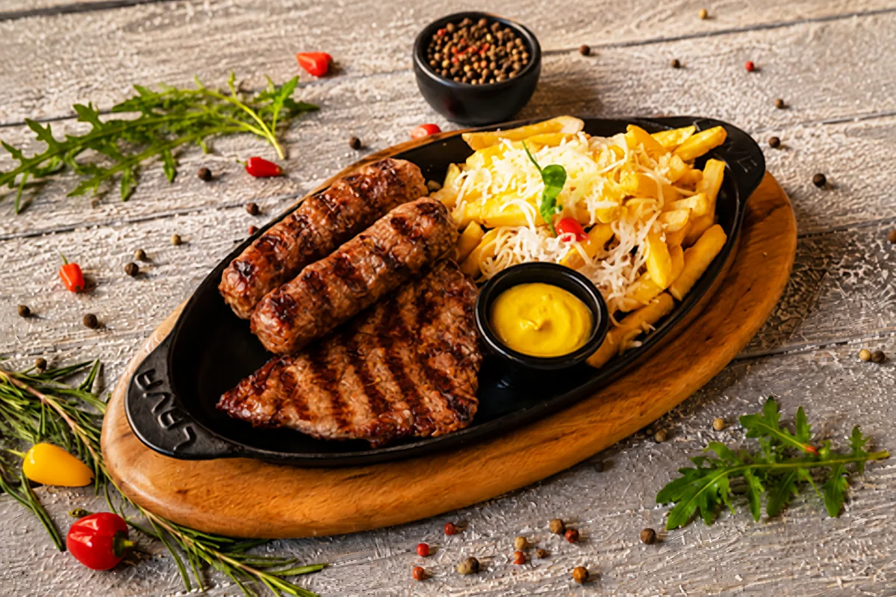
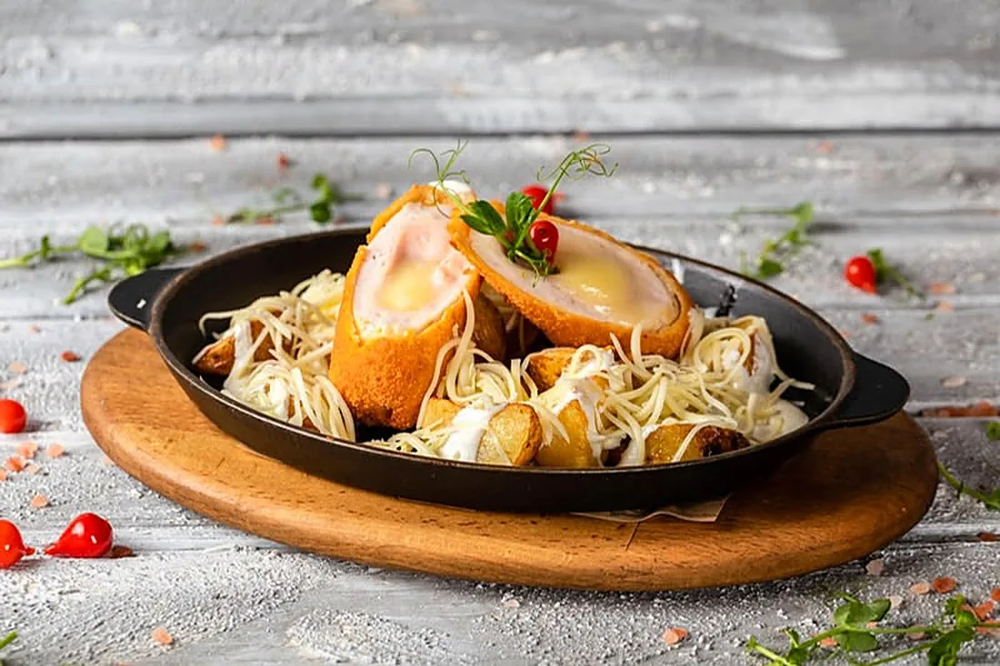
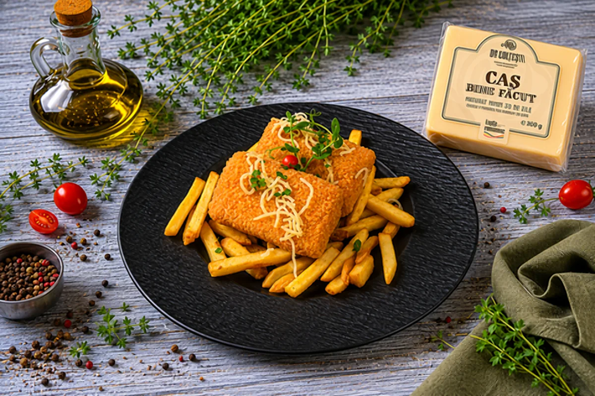
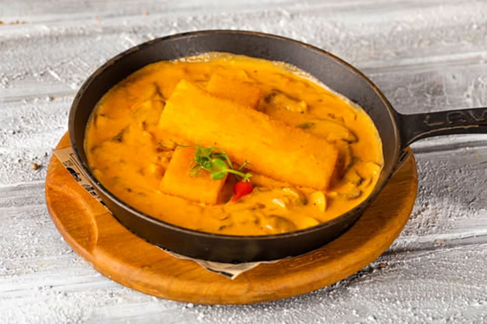
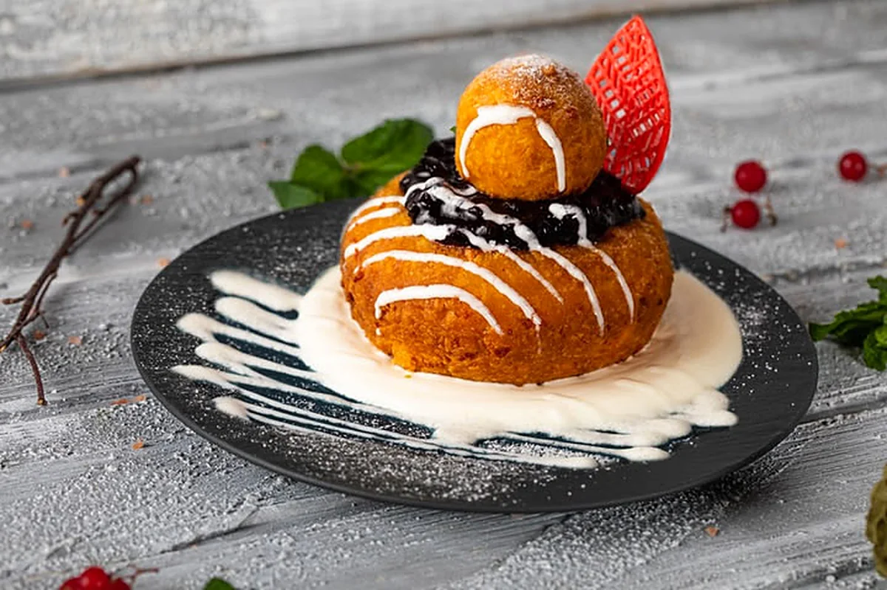
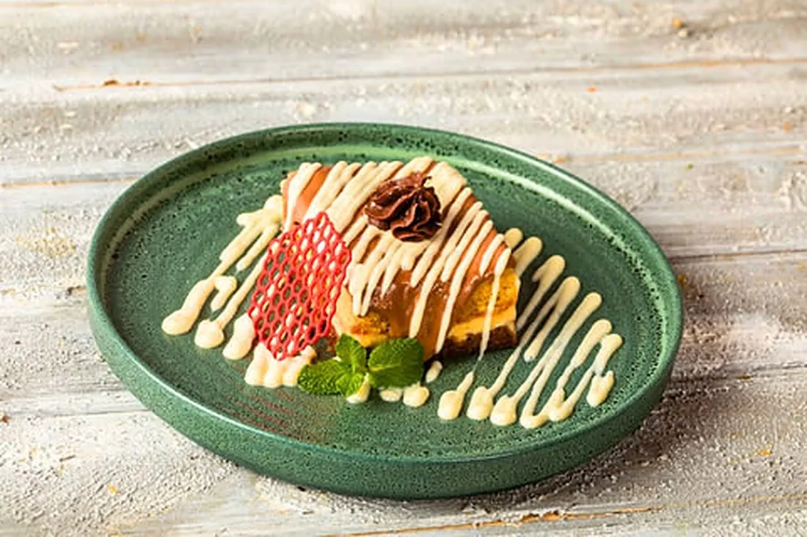

Gătit cu drag, ca acasă
Din bucătăria Lyra
✦

Mix Grill Lyra
Ceafă de porc, doi mititei și cartofi prăjiți cu usturoi și cașcaval

Cordon bleu de pui cu cartofi
Crocant, umplut cu șuncă și cașcaval, alături de cartofi cu usturoi

Cașcaval pane cu cartofi
Cașcaval topit în crustă aurie de pesmet, cu cartofi prăjiți

Papricaș de ciuperci cu mămăliguță
Ciuperci și hribi într-un sos cremos de ardei, cu mămăliguță prăjită
Ceva dulce

Papanași
Rumeniți, cu smântână și dulceață de afine, făcuți în casă

Găluște Șomloi
După rețeta casei, cu ciocolată belgiană, sos de vanilie și caramel
Cu drag, de la toată echipa LyraLa mulți ani, Radio KOKO!Să ne auzim cu bine și cu muzică bună încă mulți ani de acum înainte.
Zilnic 07:00 – 22:00www.restaurantlyra.rolyrasdelivery.ro